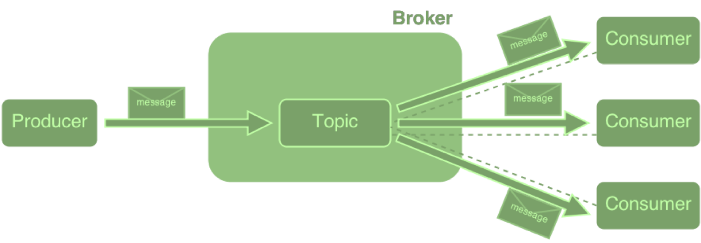

system needs to handle thousands of concurrent requests without catching on fire
Enter MQTT
"MQTT is a light weight protocol that implements a client/broker architecture. Originally developed as a machine to machine protocol by IBM and is now an open protocol."
Practical use cases
Industrial sensor monitoring (Hz, Pa, °C, m/s)
Medical implant monitoring (pacemakers)
Mobile, FB Messenger, Apple notifications
Home automation
in short:
Anything machine-to-machine
HTTP versus MQTT
HTTP
MQTT
document centric
data centric
request/response
publish/subscribe
1-1
1-to-0; 1-to-1; 1-to-n
text-based
binary format
web server
broker
min 18 bytes
min 2 bytes
/
quality of service
/
last will & testament
demo

Why did we choose Clojure?
in a nutshell
dynamic
functional
immutable
simplifies concurrency
made FOR the JVM
Have you ever looked at any of the other JVM languages and thought, that's exciting I'd like to play with this?
'Sure. Clojure. Well yeah I mean, as an old lisp guy, it's a lisp, right. And I think Rich Hickey has done some marvelous work in coming up with a clear conceptual model of how to write code that scales well. Not taking the pure functional approach of total immutability but having controlled mutability so you can have efficient datastructures but being able to reason about systems in the large, basically as if they were functional, and I think it's a really interesting mix. And of course it's a lisp so that makes it even nicer. But I realize that's not a shared taste and that's ok too.'
Building Blocks
;;everything is wrapped in a data structure
;;first element is the operator
(+ 1 1)
;;functions and values are defined with def, or defn
(def x 3)
(+ x 5)
;;let's create a function
(defn returns-eight [params] "Functions can have a doc-string"
8)
(returns-eight)
;;parameters go in the square brackets
(defn returns-something [params]
"returns what is passed in"
params)
(returns-something 5)